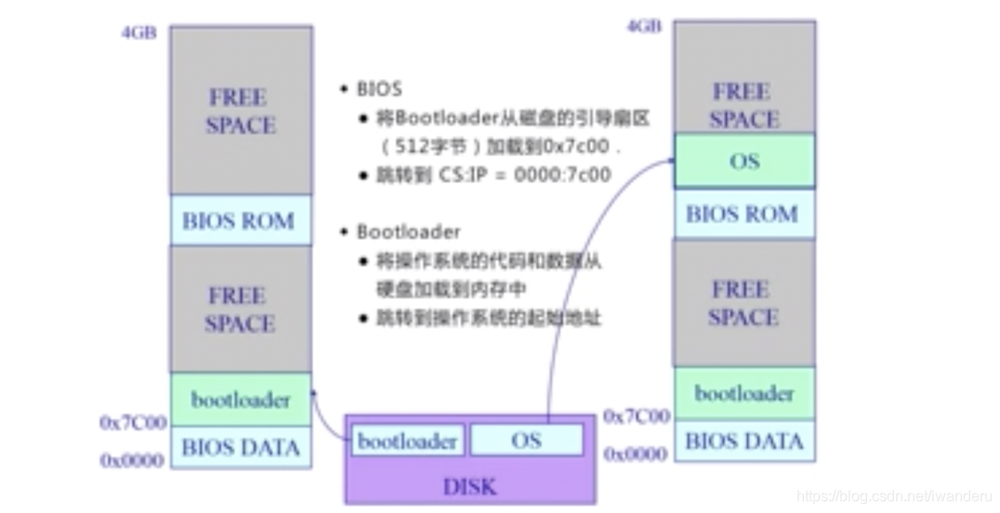

1. 目录
网易面试官: 操作系统是你必须迈过去的一道坎。不然工作十年后，你会被应届生卷死
2. 视频课程
https://www.bilibili.com/video/BV1wv4y1S7xm?p=2&vd_source=3eebd10b94a8a76eaf4b78bee8f23884
清华 计算机操作系统
笔记，参考： https://blog.csdn.net/iwanderu/article/details/103934127
3. 什么是操作系统（what）
3.1. 从功能角度：
自然：


-----------> 硬件资源角度
3.2. 从硬件资源角度
目的： 封装硬件资源，给APP进程使用
具体：
操作系统将 三大硬件资源，分别抽象成软件概念：
cpu ----- 进程
磁盘------文件
内存-------地址空间

操作系统的软件层次：
Shell + kernel
Shell 是对用户的: 比如GUI（Linux、Windows、Android 界面 ）、命令行等
kernel：真正提供功能的
（1） kernel底层：中断、I/O、设备驱动

kernel：

OS Kernel的特征:
1、并发
计算机系统中同时存在多个运行的程序 -----> 需要OS管理和调度
补充：并发与并行的区别，很自然：
并行指的是一个时刻 ---->
自然，对于cpu，不存在并行 （多核除外)并发指的是一小段时间，
时间片轮转上
2、共享
“同时”访问
互斥共享
3、虚拟
利用多道程序设计技术,让每个用户都 觉得有一个计算机专门为他服务
4、异步
程序的执行不是一贯到底,而是走走停 停,向前推进的速度不可预知
但只要运行环境相同,OS需要保证程序 运行的结果也要相同
3.3. 操作系统的历史
如果要理解深刻，必须知道历史。。。因为历史给出了为什么是这样
3.4. 操作系统结构
4. 操作系统基础操作
4.1. 启动
知识点：
●计算机体系结构概述 ●计算机内存和硬盘布局 ● 开机顺序
启动流程：

4.2. 中断、异常和系统调用
● 背景 ●中断、异常和系统调用相比较 ●中断和异常处理机制 ●系统调用的概念 ●系统调用的实现 ● 程序调用与系统调用的不同之处 ● 开销
DISK:存放OS
BIOS:基本I/O处理系统 Basic Input Output System
5. TODO:
《计算机组成原理》 全量课程： https://www.bilibili.com/video/BV1Wv411x7zP?p=2&vd_source=3eebd10b94a8a76eaf4b78bee8f23884
6. 面试题
6.1. 进程隔离相关
参考： https://blog.csdn.net/s2311307/article/details/108862748 Android的进程间通信（一） 之 进程隔离简述
6.1.1. why 为什么需要进程间隔离？

来自：https://blog.csdn.net/s2311307/article/details/108862748
安全性：为了避免A进程写入B进程的情况发生 很自然
6.1.2. what-----进程之间的隔离主要体现在哪里？ how如何实现的？ TODO ---字节
-----> TODO: 链接到知识点里
主要是内存的隔离
实现： 采用了虚拟地址空间，两个进程各自的虚拟地址不同，从逻辑上来实现彼此间的隔离。-----> TODO: 具体的过程！！！图